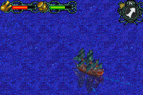
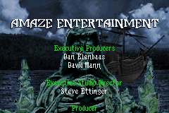
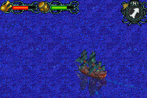
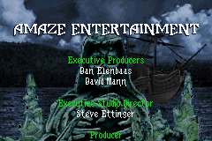

Pirates of the Caribbean: Dead Man's Chest

Complete on 2018-6-12
3 / 5
Release Date: Jun 27, 2006
Meta Score: 70
Screenshots
 



Notes
Pirates of the Caribbean: Dead Man's Chest is an action adventure game based on the popular Pirates of the Caribbean film franchise, which, fun fact, is based on on a ride at Disneyland.The game is not the lazy tie in you may have been expecting. In fact, it's a surprisingly good game.
Basic gameplay is a side scrolling platformer, with simple sword fighting. This is decent enough, better than a lot of the dodgy GBA platformers. The enemies can be a bit annoying, especially when they're near an edge and block you from getting on it to fight them. It's otherwise decent though.
This is all wrapped in another layer where you sail around the Caribbean in a pirate ship, landing on islands to get to the platformer levels. This was surprisingly cool and in-depth. You can have ship battles when you encounter enemies on the seas. These end up just being annoying, with you sailing around each other in circles, fighting against the wind.
You can buy upgrades for ship and platformer sections, explore to find bonus treasures, and look for rumours in taverns. It has a nice piratey feel too it. The main quest is fairly short, only taking me a few hours to plough through, but you could probably put in more time to exploring if you wanted to.
Graphics are decent, a little ugly in places but they are generally clear including platform hitboxes.
Overall, a surprisingly decent tie-in attempt.